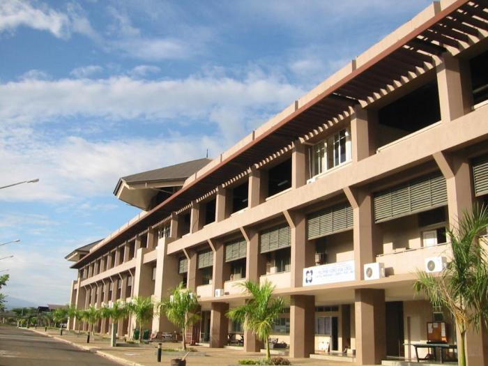
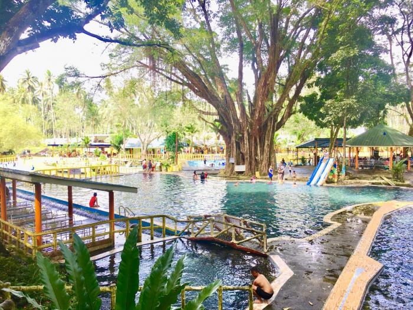
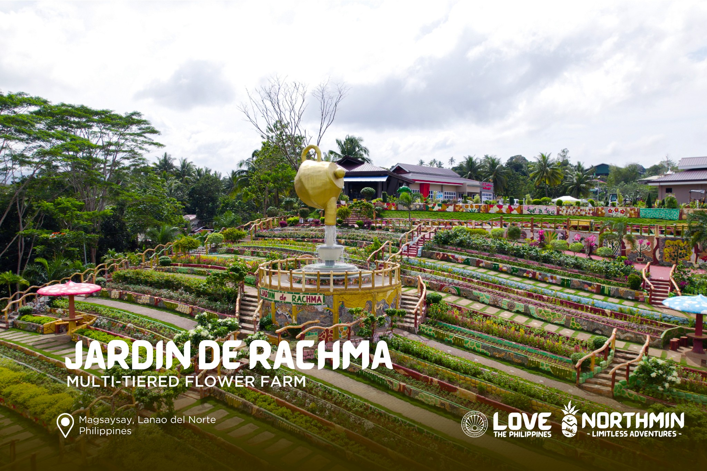

Mindanao Civic Center
The Mindanao Civic Center (MCC) located in Tubod, Lanao del Norte, is an important site that acts as a center for sports, events, and community activities. Covering 71 hectares, the facility features a hotel, gym, swimming pool, oval, and multiple sports amenities, establishing it as a central hub for recreational and professional pursuits. The MCC is recognized for organizing significant events, such as motocross races, enhancing Tubod’s image as the "Motocross Capital of the Philippines." In addition to sports, the center's adaptable venues host conventions, concerts, and various cultural events, highlighting the area's expanding infrastructure and progress. Featuring contemporary facilities and a diverse array of services, the MCC significantly contributes to the cultural and economic development of Lanao del Norte.
Kalilangan Cold Spring
Kalilangan Cold Spring, found in Tubod, Lanao del Norte, is a concealed treasure in the Philippines celebrated for its refreshing and crystal-clear waters. The spring is situated in a vibrant natural setting, providing guests a tranquil escape from the chaos of urban living. Featuring its refreshing, revitalizing water, Kalilangan Cold Spring offers an ideal location for leisure and fun, whether for swimming or just relaxing by the water's side. The region is also enveloped by stunning scenery, featuring lush vegetation and trees that contribute to its peaceful ambiance. Kalilangan Cold Spring serves not only as a spot for unwinding but also as a location to enjoy the natural splendor and tranquility of Lanao del Norte. It’s definitely a place that nature enthusiasts should see.
Panguil Bay bridge
The Panguil Bay Bridge links the towns of Tubod in Lanao del Norte and Tangub City in Misamis Occidental, showcasing exceptional engineering and serving as a crucial infrastructure advancement in Mindanao. Being the longest bridge in the area, it extends over Panguil Bay, greatly shortening travel duration between the two provinces. This bridge improves connectivity, promoting economic development and tourism, while also serving as a symbol of the creativity and advancement of the Filipino people. The beautiful sights it provides during the crossing are an advantage, making it a favored location for residents and tourists alike. The Panguil Bay Bridge represents the power of partnership and ingenuity, connecting communities and enhancing regional growth.
Jardin de Rachma
The peaceful garden called Jardin de Rachma stands as an emblem of peace and the serenity of nature. It is a sanctuary for individuals seeking peace and contemplation and is positioned in a stunning setting. Lush greenery, vibrant flowers, and serene water bodies all attribute to the well-manicured garden's peaceful atmosphere. It is the ideal place for relaxation or contemplation since tourists can stroll along clean paths while listening to the sounds of nature. Also culturally important, Jardin de Rachma often accommodates community events, cultural displays, and gatherings. Its peaceful environment offers a venue to attain inner peace and re-establish harmony with nature, giving you a temporary reprieve from the hustle and bustle of daily life. It's the perfect blend of serenity, culture, and beauty.
